UT1 · Gestión de la contratación laboral
Gestiona la documentación que genera el proceso de contratación, aplicando la normativa vigente.
Criterios de evaluación del RA1
La teoría, las actividades y la evaluación están integradas en este SCO. El PDF de apoyo se distribuye por separado en la edición Moodle.
Infografías de la Unidad 1
Utilízalas para anticipar contenidos, repasar o preparar la autoevaluación.
1. La relación laboral y su marco jurídico
Contratar no consiste en elegir un formulario y rellenarlo. Antes de redactar una sola cláusula hay que saber qué relación jurídica existe, qué normas la regulan y cuál de ellas prevalece. Una buena gestión laboral comienza, por tanto, mucho antes de la firma del contrato: empieza identificando correctamente la fuente normativa aplicable.
Esquema 1. Jerarquía práctica de fuentes laborales.
Trabajo por cuenta ajena
La relación laboral ordinaria aparece cuando una persona presta servicios voluntarios, retribuidos, por cuenta ajena y dentro del ámbito de organización y dirección de otra persona, física o jurídica. Estos rasgos permiten diferenciar el contrato de trabajo de colaboraciones mercantiles, actividades autónomas o prestaciones excluidas. En la práctica administrativa, clasificar mal la relación puede provocar cotizaciones incorrectas, sanciones y conflictos sobre derechos laborales.
Fuentes del Derecho del Trabajo
La Constitución, las normas de la Unión Europea, los convenios de la OIT incorporados al ordenamiento, las leyes y reglamentos, los convenios colectivos, el contrato y la costumbre profesional forman un sistema jerarquizado. No todas las fuentes tienen la misma fuerza ni pueden utilizarse para empeorar condiciones indisponibles. El técnico de recursos humanos debe localizar la versión vigente y saber hasta dónde puede llegar cada fuente.
Principios de aplicación
La jerarquía normativa se completa con principios propios del Derecho laboral: norma mínima, norma más favorable, condición más beneficiosa, irrenunciabilidad de derechos y, cuando exista una duda jurídica real en la interpretación de una norma, el principio protector. No son atajos para elegir lo que más conviene a una parte; se aplican con criterios jurídicos concretos y deben distinguirse de una simple preferencia empresarial.
Norma vigente
En materia laboral es frecuente trabajar con textos modificados muchas veces. Por ello, la fuente de consulta debe ser oficial y consolidada siempre que sea posible. Una captura antigua, un blog o una plantilla descargada pueden servir para orientarse, pero nunca para dar por vigente una modalidad contractual, una cuantía o un plazo. BOE, Seguridad Social, SEPE y organismos competentes son la referencia de comprobación.
Papel del técnico superior
El trabajo administrativo exige convertir una norma general en una decisión concreta: qué contrato procede, qué dato debe constar, qué comunicación hay que realizar, qué plazo debe respetarse y qué documento se archiva. La calidad profesional se aprecia en esa traducción entre norma y procedimiento, y no en la mera capacidad para copiar textos legales.
Método profesional
Definir el hecho: quién presta servicios, para quién, con qué horario, medios y retribución.
Localizar la normativa estatal aplicable.
Identificar el convenio colectivo y su ámbito.
Comprobar si hay una condición contractual o empresarial más favorable.
Documentar la decisión y conservar la fuente utilizada.
| CASO CANARIAS Una asesoría de Guía de Isora recibe a una pequeña empresa que quiere incorporar a una persona para llevar facturación y atención administrativa. Antes de proponer un contrato, el técnico comprueba la actividad de la empresa, el convenio aplicable, la jornada prevista y si el puesto es estructural o responde a una necesidad temporal acreditable. |
|---|
| ERROR HABITUAL Buscar primero el modelo de contrato y decidir después la causa. El orden correcto es el contrario: se analiza la necesidad, se identifica la modalidad legalmente posible y, solo entonces, se formaliza el documento. |
|---|
| COMPRUEBA ¿Podrías justificar por qué el contrato individual no puede eliminar un derecho reconocido por una norma imperativa o por un convenio aplicable? |
|---|
Apunte de trabajo
Resume el procedimiento en cuatro pasos y señala en cuál de ellos sería más fácil cometer un error.
2. El convenio colectivo como herramienta de trabajo
Para quien gestiona personal, el convenio colectivo no es una lectura complementaria. Es uno de los documentos de consulta cotidiana. En él se encuentran datos que condicionan la contratación y la nómina: clasificación profesional, jornada, periodos de prueba, complementos, vacaciones, licencias, preavisos o régimen disciplinario.
Ámbito de aplicación
Antes de usar un convenio hay que verificar sus ámbitos funcional, territorial, personal y temporal. Que una empresa esté situada en Tenerife no basta para escoger un convenio: importa qué actividad realiza, a qué personas se aplica, qué territorio cubre y si el texto está vigente o prorrogado. Muchos errores de nómina comienzan con un convenio mal identificado.
Estructura y clasificación profesional
Los convenios suelen ordenar los puestos mediante grupos, niveles o categorías y describen funciones y retribuciones. La clasificación determina con frecuencia salarios mínimos de convenio y complementos. El contrato debe guardar coherencia con las funciones reales; asignar una categoría inferior a la actividad efectivamente desarrollada puede generar diferencias salariales y reclamaciones.
Jornada y tiempo de trabajo
La duración anual, distribución, descansos, vacaciones y reglas sobre horas extraordinarias o complementarias pueden concretarse por convenio dentro de los límites legales. En sectores con actividad turística, turnos y trabajo en fines de semana, esta lectura adquiere especial relevancia para organizar una contratación realista.
Periodos de prueba y preavisos
El Estatuto establece límites y remite en determinados aspectos a la negociación colectiva. Por eso no debe introducirse automáticamente el mismo periodo de prueba en todos los contratos. Algo semejante ocurre con determinados preavisos y procedimientos: el convenio puede precisar reglas que el técnico debe trasladar a la documentación.
Consulta responsable
Conviene descargar el texto desde una fuente fiable, conservar la fecha de consulta y registrar qué artículos se han utilizado. Cuando exista una revisión salarial posterior, hay que comprobar desde cuándo produce efectos y si exige abonar atrasos.
Método profesional
Identificar el CNAE/actividad real sin usarlo como único criterio.
Buscar el convenio potencialmente aplicable en fuente oficial.
Comprobar ámbito funcional, territorial, personal y temporal.
Localizar clasificación, jornada, periodo de prueba y tablas salariales.
Registrar versión y fecha de consulta en el expediente.
| CASO CANARIAS En una empresa alojativa del sur de Tenerife, el alumnado compara las funciones de recepción, administración y reservas con la clasificación del convenio que resulte aplicable. El objetivo no es memorizar tablas, sino aprender a extraer los datos necesarios para contratar y retribuir correctamente. |
|---|
| ERROR HABITUAL Dar por hecho que “hostelería” significa exactamente lo mismo para cualquier empresa turística. La actividad principal y el ámbito funcional del convenio deben comprobarse; una empresa externa de mantenimiento o una asesoría que trabaja para hoteles puede estar sometida a otro convenio. |
|---|
| COMPRUEBA ¿Qué cuatro ámbitos comprobarías antes de afirmar que un convenio es aplicable a una empresa? |
|---|
Apunte de trabajo
Explica con tus palabras las dos decisiones más importantes de este apartado y anota la fuente oficial que consultarías para comprobarlas.
3. El contrato de trabajo: sujetos, forma y contenido
El contrato convierte la incorporación de una persona en una relación jurídica concreta. Su redacción debe ser coherente con la necesidad empresarial, la modalidad elegida, el convenio y la información efectivamente comunicada a la persona trabajadora.
Sujetos y capacidad
Intervienen la persona trabajadora y la parte empleadora. La capacidad para contratar puede estar condicionada por la edad, la representación de menores o situaciones específicas. En la empresa, además, quien firma debe tener facultades suficientes para actuar en nombre de la organización.
Forma escrita
Aunque la ley admite algunos supuestos de contratación verbal, numerosas modalidades y condiciones exigen forma escrita. Además, cualquiera de las partes puede exigirla en determinados términos. Desde una perspectiva de gestión, documentar correctamente la relación reduce incertidumbre y permite probar jornada, duración, puesto y condiciones esenciales.
Contenido esencial
Identidad de las partes, centro y puesto, grupo profesional, fecha de inicio, duración cuando proceda, jornada, distribución, salario, periodo de prueba, convenio y demás cláusulas necesarias deben ser coherentes. No basta con que cada campo esté formalmente cumplimentado: el conjunto tiene que describir una relación posible y legal.
Información laboral
La empresa tiene obligaciones de información sobre elementos esenciales de la relación. El técnico debe distinguir lo que figura en el propio contrato de la información que puede completarse mediante anexos o comunicaciones, y conservar prueba de la entrega.
Periodo de prueba
Debe pactarse por escrito y respetar límites legales y convencionales. Durante su vigencia operan reglas específicas, pero no es un espacio sin derechos: la relación existe, hay alta y cotización, y siguen siendo aplicables los principios de igualdad y no discriminación.
Método profesional
Recoger datos de empresa y persona candidata.
Confirmar puesto, grupo, funciones, jornada, salario y centro.
Seleccionar modalidad y justificar su causa cuando sea necesaria.
Revisar convenio y periodo de prueba.
Formalizar, firmar, comunicar y archivar.
| CASO CANARIAS Una sociedad de servicios administrativos de Tenerife contrata a una técnica para jornada completa. El ejercicio obliga a comprobar que el salario pactado supera los mínimos legales y convencionales, que las funciones coinciden con el grupo y que el periodo de prueba no excede el permitido. |
|---|
| ERROR HABITUAL Confundir contrato “bien rellenado” con contrato correcto. Unformulario puede no tener casillas vacías y, sin embargo, contener una causa temporal insuficiente, un grupo profesional incoherente o un periodo de prueba inválido. |
|---|
| COMPRUEBA ¿Qué datos revisarías de manera cruzada entre oferta, convenio, contrato y alta en Seguridad Social? |
|---|
Apunte de trabajo
Escribe tres conceptos clave y formula una pregunta que podrías plantear en una asesoría o departamento de personal.
4. Contratación indefinida y fijo-discontinua
La contratación indefinida constituye la forma ordinaria de vinculación cuando la necesidad de trabajo no tiene una causa temporal legalmente suficiente. Dentro de ella, el contrato fijo-discontinuo responde a trabajos de naturaleza estacional, vinculados a actividades de temporada o de prestación intermitente en los términos previstos legalmente.
Esquema 2. Decisión contractual: la causa antes que el formulario.
Indefinido ordinario
No tiene una fecha final predeterminada por una causa temporal. Puede celebrarse a jornada completa o parcial y admite las particularidades e incentivos que establezca la normativa. La decisión correcta no depende de que la empresa “prefiera estabilidad”, sino de la naturaleza de la necesidad de trabajo.
Fijo-discontinuo
Se utiliza cuando la actividad se repite de forma intermitente o estacional conforme a los supuestos legales. La persona mantiene un vínculo indefinido, aunque existan periodos de actividad e inactividad. No debe confundirse con encadenar contratos temporales cada vez que vuelve la temporada.
Llamamiento
El convenio colectivo o acuerdo de empresa puede regular criterios objetivos y formales de llamamiento. La empresa debe aplicar esas reglas con transparencia y conservar prueba de las comunicaciones, pues un incumplimiento puede producir consecuencias relevantes.
Antigüedad y derechos
La condición de fijo-discontinuo no convierte los periodos de inactividad en una nueva contratación. El vínculo se mantiene. La normativa establece reglas sobre antigüedad y determinados derechos que deben revisarse según la cuestión concreta.
Contexto canario
En una economía con actividades estacionales, el fijo-discontinuo merece una atención especial. No obstante, la etiqueta “temporada turística” no sustituye el análisis: hay que comprobar si el puesto responde realmente a una actividad intermitente o si la necesidad es estable durante todo el año.
Método profesional
Describir el patrón de actividad durante al menos un ciclo anual.
Determinar si la necesidad es estructural continua o intermitente.
Comprobar regulación de llamamiento en convenio.
Documentar jornada estimada y periodo de actividad.
Planificar comunicaciones y archivo de llamamientos.
| CASO CANARIAS Una empresa de ocio de costa trabaja intensamente en determinadas temporadas y mantiene una plantilla base todo el año. El alumnado separa puestos estructurales permanentes de actividades periódicas y justifica en qué casos podría encajar un fijo-discontinuo. |
|---|
| ERROR HABITUAL Elegir fijo-discontinuo únicamente porque la empresa quiere “parar” el contrato unos meses. La modalidad debe corresponder a un patrón real de actividad previsto por la ley. |
|---|
| COMPRUEBA ¿Qué diferencia esencial existe entre una relación fija-discontinua y una sucesión de contratos temporales? |
|---|
Apunte de trabajo
Convierte el apartado en una lista de comprobación breve que pudieras utilizar antes de cerrar un expediente.
5. Contrato temporal por circunstancias de la producción
Tras la reforma de la contratación temporal, la regla es clara: la temporalidad exige una causa legal precisa y suficientemente explicada. En las circunstancias de la producción, el expediente debe permitir entender qué incremento, oscilación o situación concreta justifica que la necesidad tenga duración limitada.
Causalidad
No basta escribir “acumulación de tareas”. La causa debe describir el hecho productivo y su conexión con la duración prevista. Una redacción genérica dificulta demostrar que la temporalidad estaba justificada.
Circunstancias imprevisibles
Determinados incrementos ocasionales e imprevisibles y oscilaciones que generen desajustes temporales pueden encajar en la modalidad dentro de los límites legales. La duración debe vincularse a la causa, no elegirse por costumbre.
Situaciones previsibles de corta duración
La ley contempla un régimen específico para situaciones ocasionales previsibles y de duración reducida, con límites que deben consultarse en la norma vigente. Requiere planificación y control, por lo que el departamento de personal no puede gestionarlo como una bolsa indefinida de días.
Formalización y prueba
El contrato debe expresar con precisión la causa habilitante, las circunstancias concretas que la justifican y su conexión con la duración. Esa descripción es parte sustantiva de la validez de la temporalidad.
Finalización
La finalización debe producirse conforme a la causa y las reglas de duración. El técnico comprobará preaviso cuando proceda, liquidación, indemnización si corresponde, baja y certificado/documentación asociada.
Método profesional
Redactar por escrito el hecho productivo.
Verificar que la necesidad no sea estructural permanente.
Encajar el supuesto en la modalidad legal vigente.
Relacionar causa y duración.
Conservar evidencias que permitan explicar la decisión.
| CASO CANARIAS Un comercio recibe un pedido extraordinario vinculado a un evento insular que multiplica durante unas semanas el volumen de preparación y atención. El caso se utiliza para aprender a describir la causa sin fórmulas vacías y a diferenciarla de una necesidad permanente de plantilla. |
|---|
| ERROR HABITUAL Usar como causa la mera voluntad de “probar” a una persona. Para eso existe, cuando procede, el periodo de prueba; la temporalidad exige una necesidad empresarial temporal real. |
|---|
| COMPRUEBA ¿Por qué una causa redactada de forma genérica debilita la justificación de un contrato temporal? |
|---|
Apunte de trabajo
Relaciona lo estudiado con una situación realista de una empresa de Canarias e indica qué documento o registro se generaría.
6. Contrato de sustitución
El contrato de sustitución permite atender necesidades relacionadas con la ausencia de una persona con derecho a reserva de puesto, completar determinadas reducciones de jornada o cubrir temporalmente un puesto durante un proceso de selección o promoción en los términos previstos legalmente.
Persona sustituida y causa
Cuando se sustituye a una persona concreta, la documentación debe identificarla y expresar la causa de sustitución. La duración está conectada con el mantenimiento de esa causa.
Reserva de puesto
No toda ausencia justifica una sustitución. Hay que verificar que exista el supuesto legal correspondiente y que la persona ausente conserve el derecho relevante.
Reducción de jornada
Puede existir contratación para completar la jornada reducida de otra persona cuando concurren los requisitos legales. El contrato debe dejar claro qué parte de jornada se cubre y por qué.
Proceso de selección
La modalidad puede emplearse, dentro de los límites legales, para cubrir temporalmente un puesto durante un proceso de selección o promoción para su cobertura definitiva. Deben controlarse especialmente la duración y el cierre del proceso.
Coordinación documental
Fechas de ausencia, alta de la persona sustituta, eventual coincidencia permitida por la normativa y fecha de reincorporación deben estar coordinadas. La gestión correcta exige que contrato, alta, comunicación y expediente cuenten la misma historia.
Método profesional
Identificar el supuesto de sustitución y su base legal.
Documentar la persona o puesto afectado.
Determinar jornada y duración vinculadas a la causa.
Formalizar y comunicar.
Cerrar el contrato cuando desaparezca la causa.
| CASO CANARIAS Una administrativa de una asesoría del sur de Tenerife inicia una situación con reserva de puesto. La empresa necesita continuidad en la atención de clientes. El alumnado debe preparar la sustitución y programar qué documentos habrá que revisar cuando se produzca la reincorporación. |
|---|
| ERROR HABITUAL Poner una fecha final arbitraria que no guarda relación con la causa de sustitución. La duración se conecta con el supuesto que justifica el contrato. |
|---|
| COMPRUEBA ¿Qué información debe permitir relacionar sin duda el contrato de la persona sustituta con la causa que lo origina? |
|---|
Apunte de trabajo
Anota qué dato, plazo o requisito no aceptarías sin comprobar antes su vigencia y dónde lo verificarías.
7. Contratos formativos
Los contratos formativos combinan prestación laboral y finalidad formativa, pero no constituyen una modalidad única. El técnico debedistinguir los supuestos legales, requisitos de acceso, duración, tutoría, tiempo de trabajo y retribución aplicables en cada caso.
Finalidad formativa
La formación no puede convertirse en una etiqueta para abaratar un puesto ordinario. Debe existir una finalidad real y documentada, con el contenido formativo, tutorización y condiciones que exija la modalidad.
Formación en alternancia
Se orienta a compatibilizar actividad laboral retribuida con procesos formativos en los términos legales. Exige coordinación entre trabajo y formación, límites específicos sobre tiempo de trabajo y una retribución conforme al marco aplicable.
Práctica profesional
La modalidad destinada a adquirir práctica profesional adecuada al nivel de estudios exige una titulación o formación habilitante y debe celebrarse dentro del periodo legal correspondiente desde su obtención, con las particularidades previstas para determinados colectivos.
Plan y tutoría
La documentación formativa es parte esencial del expediente. La empresa debe poder explicar qué competencias se desarrollan, quién tutoriza y cómo se relacionan las tareas con la finalidad del contrato.
Comprobación previa
Antes de formalizar, se verifican estudios, fechas, experiencias previas relevantes y posibles limitaciones. La aplicación informática no sustituye esta revisión; simplemente registra una decisión que debe ser jurídicamente correcta.
Método profesional
Identificar la finalidad que se pretende.
Comprobar requisitos de la persona candidata.
Revisar duración, jornada y retribución vigentes.
Preparar plan/tutoría y documentación asociada.
Formalizar y hacer seguimiento del componente formativo.
| CASO CANARIAS Una empresa administrativa quiere incorporar a una persona recién titulada en un ciclo de grado superior. El alumnado compara si la necesidad encaja en una modalidad formativa o en un contrato indefinido ordinario, evitando decidir solo por la existencia de incentivos. |
|---|
| ERROR HABITUAL Seleccionar un contrato formativo porque la persona es joven. La edad, cuando sea relevante, es solo uno de los requisitos; lo decisivo es que se cumpla la finalidad y el resto de condiciones legales. |
|---|
| COMPRUEBA ¿Qué documentación demostraría que la finalidad formativa se está desarrollando realmente? |
|---|
Apunte de trabajo
Resume el apartado como si tuvieras que explicárselo a una persona que se incorpora mañana al departamento de Recursos Humanos.
8. Jornada, tiempo parcial y horas complementarias
La jornada pactada afecta al contrato, a la organización del trabajo, a la retribución y a la cotización. En el trabajo a tiempo parcial, la precisión documental es especialmente importante porque deben quedar determinadas las horas ordinarias y su distribución conforme a las reglas aplicables.
Jornada completa y parcial
El carácter parcial se relaciona con una prestación inferior a la de una persona trabajadora comparable a tiempo completo en los términos legales. El contrato a tiempo parcial debe formalizarse por escrito y concretar la jornada.
Distribución
No basta indicar un porcentaje. El documento debe recoger las horas ordinarias contratadas y su distribución conforme a lo exigido. El convenio puede añadir reglas que afecten a cuadrantes y organización.
Horas complementarias
En determinados contratos a tiempo parcial pueden pactarse o realizarse horas complementarias con requisitos y límites. Deben distinguirse de las horas extraordinarias y registrarse correctamente.
Registro de jornada
La empresa debe cumplir las obligaciones de registro que resulten aplicables. Para recursos humanos, esto implica coordinar contrato, calendario, cuadrantes, incidencias y datos utilizados en nómina.
Conciliación y organización
Las decisiones sobre jornada pueden tener impacto en conciliación, igualdad y derechos de adaptación o reducción. El técnico administrativo no resuelve por sí solo conflictos jurídicos complejos, pero sí debe reconocerlos y canalizarlos correctamente.
Método profesional
Determinar la jornada de referencia.
Calcular horas ordinarias contratadas.
Comprobar convenio y distribución.
Revisar si procede pacto de horas complementarias.
Asegurar coherencia con registro y nómina.
| CASO CANARIAS Una tienda de un municipio turístico necesita refuerzo de tarde durante varios días a la semana. El alumnado transforma la necesidad real en una jornada contractual concreta y verifica que la distribución pueda gestionarse y registrarse correctamente. |
|---|
| ERROR HABITUAL Escribir “media jornada” sin concretar horas ni distribución cuando la formalización exige precisión. El porcentaje coloquial no sustituye los datos contractuales. |
|---|
| COMPRUEBA ¿Qué documentos deberían ser coherentes con la jornada que figura en el contrato? |
|---|
Apunte de trabajo
Identifica un error profesional frecuente y escribe la comprobación concreta que harías para evitarlo.
Ejemplos resueltos de contratos
Modelos didácticos con datos ficticios, organizados con los campos esenciales de los modelos oficiales. Antes de tramitar un caso real se utiliza siempre el formulario oficial vigente.
Vista didáctica del impreso · Contrato indefinido
Cómo leerlo: los bloques reproducen la lógica de cumplimentación del modelo oficial sin copiar el formulario. Primero se identifican las partes; después modalidad, puesto, jornada y retribución; por último cláusulas, firmas y comunicación.
1 · Indefinido ordinario
| Empresa | Atlántico Gestión Canaria, S.L. | Centro | Guía de Isora |
|---|---|---|---|
| Trabajadora | Laura Pérez Díaz | Inicio | 01/10/2026 |
| Puesto | Administrativa | Jornada | Completa, según convenio |
| Duración | Indefinida | Retribución | Según grupo y tabla vigente del convenio |
Por qué: cubre una necesidad permanente y estructural. No existe una causa temporal que deba justificar una duración limitada.
2 · Fijo-discontinuo
| Empresa | Hotel Mirador del Teide, S.L. | Actividad | Campañas turísticas recurrentes |
|---|---|---|---|
| Puesto | Recepcionista | Modalidad | Indefinido fijo-discontinuo |
| Actividad estimada | Periodos estacionales según planificación | Llamamiento | Según criterios objetivos del convenio aplicable |
Por qué: la necesidad se repite y forma parte de la actividad ordinaria, aunque existan periodos de inactividad. El llamamiento debe quedar documentado conforme a la regulación aplicable.
3 · Sustitución
| Empresa | Servicios Administrativos Chío, S.L. | Sustituida | Ana Martín López |
|---|---|---|---|
| Causa | Suspensión con reserva de puesto | Sustituta | Marta Rodríguez León |
| Puesto | Auxiliar administrativa | Duración | Vinculada a la causa de sustitución |
Por qué: el contrato debe identificar la causa y la persona sustituida cuando proceda. La temporalidad no se presume: queda vinculada al supuesto que la origina.
4 · Circunstancias de la producción
| Empresa | Distribuciones Isora, S.L. | Causa | Incremento ocasional e imprevisible de pedidos |
|---|---|---|---|
| Puesto | Administrativo de pedidos | Jornada | Completa |
| Duración | La estrictamente conectada con la causa acreditada | Expediente | Con evidencia del incremento y su periodo |
Por qué: la redacción debe explicar la circunstancia concreta y conectar esa circunstancia con la duración; una fórmula genérica no basta.
5 · Formación en alternancia
| Trabajador | Daniel Hernández Cruz | Formación | CFGS relacionado con la actividad |
|---|---|---|---|
| Empresa | Gestión Sur Tenerife, S.L. | Tutor/a | Designado/a por la empresa |
| Actividad | Tareas vinculadas al itinerario formativo | Plan | Plan formativo coordinado y documentado |
Por qué: el trabajo y la formación forman una unidad. Deben quedar coordinados actividad, tiempos y tutoría.
6 · Obtención de práctica profesional
| Trabajadora | Lucía González Ramos | Titulación | CFGS Administración y Finanzas |
|---|---|---|---|
| Puesto | Técnica administrativa | Objetivo | Práctica adecuada al nivel de estudios |
| Tutor/a | Responsable administrativo designado | Plan | Plan formativo individual |
Por qué: puesto, tareas y titulación deben guardar relación y el expediente debe documentar el objetivo formativo.
9. El procedimiento administrativo de contratación
Una contratación profesional funciona como un circuito. Si cada documento se prepara de forma aislada, aparecen fechas contradictorias, datos diferentes o comunicaciones fuera de plazo. Por eso conviene trabajar con una secuencia estable y una lista de comprobación.
Esquema 3. Flujo documental de una contratación.
Preparación
Se reúnen datos identificativos, información del puesto, convenio, modalidad, jornada, salario y fecha prevista de incorporación. También se comprueban requisitos o beneficios que puedan afectar al expediente.
Seguridad Social
La situación de afiliación y alta debe tramitarse conforme a los plazos y procedimientos vigentes. Es esencial distinguir la afiliación, que es única, de las altas y bajas que se producen en las distintas relaciones de trabajo.
Formalización
Contrato y anexos se confeccionan con los datos previamente validados. Firma y entrega deben quedar documentadas. Las cláusulas adicionales no pueden contradecir normas imperativas o derechos indisponibles.
Comunicación
Los contratos y sus datos se comunican por los medios establecidos. El técnico debe conocer el canal vigente y conservar justificantes o evidencias de presentación.
Archivo y seguimiento
El expediente no termina el día del alta. Debe quedar preparado para nóminas, cambios posteriores, formación, permisos, comunicaciones y eventual extinción. Una buena estructura de archivo evita volver a pedir datos y reduce errores.
Método profesional
Abrir ficha de contratación.
Validar convenio, grupo, jornada, salario y modalidad.
Preparar alta y documentos.
Firmar y comunicar.
Archivar justificantes y programar revisiones o vencimientos.
| CASO CANARIAS La empresa simulada ATLÁNTICO GESTIÓN CANARIAS, S.L. incorpora tres perfiles: administración, atención al cliente y mantenimiento. El alumnado debe mantener un checklist individual para que ningún expediente avance si falta una comprobación esencial. |
|---|
| ERROR HABITUAL Pensar que “el programa ya lo comunica todo”. Las aplicaciones automatizan tareas, pero la responsabilidad de que los datos, fechas, modalidad y causa sean correctos sigue siendo de quien gestiona el expediente. |
|---|
| COMPRUEBA ¿Qué controles colocarías antes de dar por cerrada una contratación? |
|---|
Apunte de trabajo
Resume el procedimiento en cuatro pasos y señala en cuál de ellos sería más fácil cometer un error.
10. Organismos públicos y comunicación telemática
La gestión laboral se relaciona con varias Administraciones. Saber qué organismo hace qué evita duplicidades y errores. También permite explicar a una empresa por qué un trámite se realiza ante la TGSS, el SEPE, el INSS, la Inspección o la Agencia Tributaria.
TGSS
Gestiona, entre otras funciones, afiliación, altas y bajas, inscripción y recaudación en el sistema de Seguridad Social. En la práctica empresarial, buena parte de las comunicaciones se realizan por medios electrónicos.
INSS
Gestiona numerosas prestaciones económicas del sistema y reconoce derechos en materias de su competencia. No debe confundirse con la Tesorería: una administra recursos y actos de encuadramiento/recaudación; la otra gestiona prestaciones y derechos en su ámbito.
SEPE
Interviene en políticas y prestaciones de desempleo de ámbito estatal y en comunicaciones relacionadas con la contratación a través de los sistemas habilitados. La guía y los modelos contractuales actuales deben consultarse en su web oficial.
Servicio Canario de Empleo
En Canarias desarrolla políticas activas de empleo, formación, orientación y programas de incentivos. En 2026 existen programas específicos que pueden resultar de interés empresarial, pero sus convocatorias y requisitos deben comprobarse antes de prometer una subvención o bonificación.
Inspección de Trabajo y Seguridad Social
Vigila el cumplimiento de la normativa social y puede requerir documentación. Un archivo ordenado, justificantes de comunicaciones y coherencia entre contrato, jornada y nómina son también herramientas de cumplimiento.
Método profesional
Identificar el objetivo del trámite.
Determinar el organismo competente.
Acceder a fuente oficial y comprobar requisitos/plazo.
Realizar o simular la comunicación.
Guardar justificante y vincularlo al expediente.
| CASO CANARIAS Una pyme de Tenerife recibe una comunicación electrónica y duda si debe responder a la TGSS o al INSS. El ejercicio parte del contenido del requerimiento y obliga a distinguir competencias en lugar de decidir por el logotipo o el nombre del portal. |
|---|
| ERROR HABITUAL Confundir Seguridad Social con un único organismo. El sistema tiene distintas entidades y servicios; conocer sus funciones es una competencia administrativa básica. |
|---|
| COMPRUEBA ¿A qué organismo acudirías para un alta de trabajador y a cuál para una prestación cuya gestión corresponda al INSS? |
|---|
Apunte de trabajo
Explica con tus palabras las dos decisiones más importantes de este apartado y anota la fuente oficial que consultarías para comprobarlas.
11. Archivo laboral, protección de datos e incentivos en Canarias
El expediente de personal reúne información identificativa, económica y, en determinados trámites, datos especialmente delicados. Gestionarlo exige criterio documental y protección de datos. Además, cuando se estudian incentivos a la contratación, la documentación probatoria se vuelve decisiva.
Minimización
Solo se solicitan y conservan los datos necesarios para la finalidad legítima correspondiente. Copiar documentos completos por rutina puede conducir a almacenar información que la empresa no necesita.
Acceso y confidencialidad
La documentación laboral no debe estar disponible para toda la organización. Se definen permisos, se protege el almacenamiento y se evita compartir nóminas o datos personales por canales inseguros.
Trazabilidad
Cada documento debe tener una denominación clara, fecha y relación con la persona y el trámite. En expedientes digitales conviene controlar versiones y conservar justificantes de presentación.
Incentivos y subvenciones
Los programas de empleo pueden cambiar por convocatoria. En Canarias, el Servicio Canario de Empleo publica líneas como CERTIFÍCATE, RETORNO AL EMPLEO o INCENTÍVATE, entre otras. El técnico debe leer la convocatoria vigente, comprobar requisitos, incompatibilidades, mantenimiento del empleo y documentación antes de incorporar el incentivo a una decisión económica.
Criterio profesional
Una subvención nunca debe decidir por sí sola una contratación que no responde a una necesidad real o a una modalidad legal. El incentivo se estudia después de definir el puesto y verificar que empresa y persona cumplen requisitos.
Método profesional
Diseñar estructura de carpetas.
Definir nomenclatura y permisos.
Separar documentos de acceso restringido.
Comprobar requisitos del incentivo en fuente oficial.
Crear checklist de justificación y mantenimiento.
| CASO CANARIAS La empresa simulada estudia una convocatoria del Servicio Canario de Empleo. El alumnado debe extraer quién puede ser beneficiario, qué contratación se incentiva, plazo, cuantía, obligaciones de mantenimiento y documentación, sin limitarse a copiar el resumen de una noticia. |
|---|
| ERROR HABITUAL Afirmar que una empresa “tiene derecho” a una ayuda porque cumple una condición visible. Las convocatorias incluyen requisitos acumulativos, exclusiones, presupuesto y procedimientos que deben comprobarse en su totalidad. |
|---|
| COMPRUEBA ¿Qué diferencia existe entre usar un incentivo como dato económico y usarlo como justificación jurídica de la modalidad contractual? |
|---|
Apunte de trabajo
Escribe tres conceptos clave y formula una pregunta que podrías plantear en una asesoría o departamento de personal.
UT1 · Resumen para repasar
Resumen visual del expediente de contratación.
| Clave | Recuerda |
|---|---|
| Necesidad | Puesto, duración, jornada, centro. |
| Marco | Ley + convenio vigente. |
| Decisión | Modalidad coherente con la causa. |
| Trámite | Alta, contrato, comunicación. |
| Control | Justificantes, protección de datos y archivo. |
Lista de comprobación
☐ Sé localizar la norma y el convenio.
☐ Distingo modalidades y justifico la causa.
☐ Puedo completar el circuito de contratación.
☐ Distingo las funciones de organismos.
☐ Archivo con trazabilidad y protección de datos.
Práctica interactiva por criterios de evaluación
No basta con completar los ejercicios: se consideran dominados cuando la respuesta es correcta. Puedes repetirlos cuantas veces necesites.
Progreso de práctica
0 de 54 actividades dominadas.
Seleccionar la normativa que regula la contratación laboral
Se ha seleccionado la normativa que regula la contratación laboral.
Identificar las fases del proceso de contratación
Se han identificado las fases del proceso de contratación.
Interpretar las funciones de los organismos públicos
Se han interpretado las funciones de los organismos públicos que intervienen en el proceso de contratación.
Determinar modalidades de contratación y sus elementos
Se han determinado las distintas modalidades de contratación laboral vigentes y sus elementos, aplicables a cada colectivo.
Proponer la modalidad contractual adecuada
Se ha propuesto la modalidad de contrato más adecuado a las necesidades del puesto de trabajo y a las características de empresas y trabajadores.
Aplicar correctamente el convenio colectivo
Se han especificado las funciones de los convenios colectivos y las variables que regulan con relación a la contratación laboral.
Cumplimentar la documentación de contratación
Se ha cumplimentado la documentación que se genera en cada una de las fases del proceso de contratación.
Reconocer vías de comunicación con personas y organismos
Se han reconocido las vías de comunicación convencionales y telemáticas con las personas y organismos oficiales que intervienen en el proceso de contratación.
Utilizar programas informáticos para confección, registro y archivo
Se han empleado programas informáticos específicos para la confección, registro y archivo de la información y documentación relevante en el proceso de contratación.
Autoevaluación de preparación · UT1
Entrenamiento previo al examen. Puedes repetirla tantas veces como necesites y recibirás corrección inmediata. No forma parte de la calificación.
Examen tipo test · UT1
Convocatoria activada por el profesor. La versión se genera y corrige en el servidor y no muestra las soluciones.
Antes de comenzar
- Un único intento.
- Las preguntas se distribuyen por criterio de evaluación.
- La versión queda vinculada a tu intento aunque recargues la página.
- Las incidencias de foco se registran durante la prueba.
Programa de recuperación
Esta zona se activa tras el cierre de la evaluación únicamente con los criterios que todavía debes superar.
Consultando tu situación...
Fuentes y actualización
- Real Decreto 1584/2011, currículo del título de Técnico Superior en Administración y Finanzas.
- Real Decreto Legislativo 2/2015, Estatuto de los Trabajadores, versión consolidada.
- Real Decreto Legislativo 8/2015, Ley General de la Seguridad Social, versión consolidada.
- SEPE: modelos y guía de contratos.
- TGSS / Seguridad Social: afiliación, altas, bajas y comunicaciones.
- Servicio Canario de Empleo: programas y recursos de empleo en Canarias.
- Convenios colectivos vigentes aplicables a cada caso.